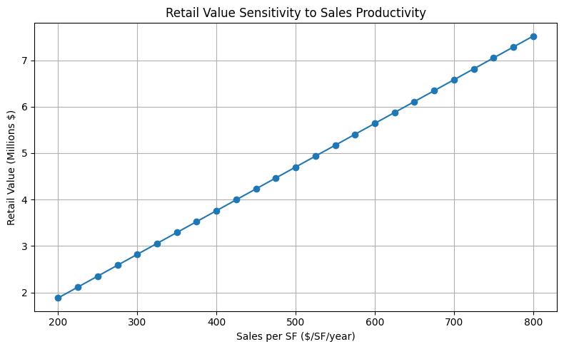

Retail is financially fragile because its revenues depend on uncertain sales, tenant turnover, and operating costs, while rents are often insufficient to cover construction and financing expenses on their own. Performance is also highly sensitive to market position and location, as businesses rely on visibility, accessibility, and proximity to demand to attract customers. Threshold logic means retail becomes viable only after sufficient surrounding demand exists, such as nearby residents, employment centers, or major anchors like a university or hospital. Without these demand drivers, retail often cannot generate enough revenue to be self-sustaining. Consequently, retail may not pencil independently, meaning it cannot cover its costs without support from other components of a mixed-use development, cross-subsidization, or public capital.
| Scenario | Retail RLV | System Gain/Loss | Viable? |
|---|---|---|---|
| Standalone Retail | -$2,500,000 | - | No - Retail alone produces negative RLV and cannot cover development costs. |
| Apartment Uplift | -$2,500,000 | $49,700,000 | Yes - Apartment rent uplift offsets retail loss, creating significant system value. |
| Catalyst Threshold | -$1,755,000 | $50,445,000 | Yes - Catalyst demand increases retail rents and reduces vacancy, improving viability. |
| Low Office Occupancy | -$2,970,000 | $49,230,000 | Conditional - Retail losses are higher, but system gains can justify the investment if supported by other uses. |
The chart below shows retail value versus sales per square foot:

Public funds should be allocated to retail development only when private mechanisms cannot capture system-level gains. For instance, in the Low Office Occupancy scenario, retail losses rise to $2,970,000, which may exceed what apartment rent uplift can realistically cover. In such cases, public support could be justified to maintain retail as a system-enhancing use. In contrast, in scenarios where the required apartment rent uplift is modest, such as 4.17% in a typical mixed-use scenario, retail can generally be supported without public subsidy, relying instead on cross-subsidization from apartments or other components of the development.